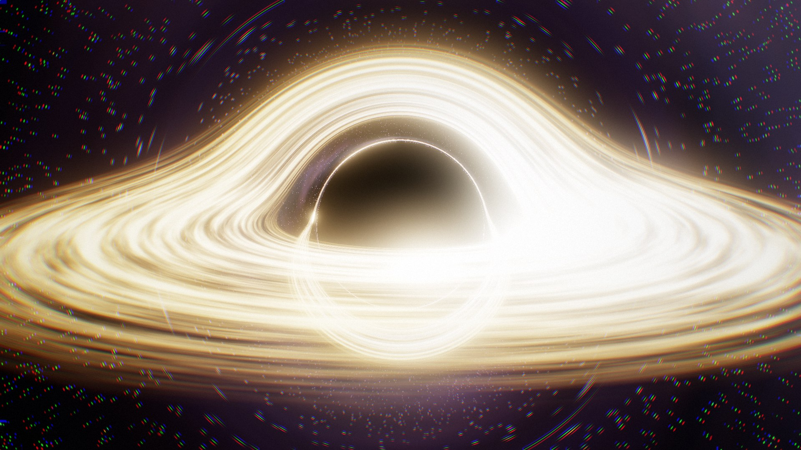
Space Travel is a five-minute real-time journey in the tradition of the Amiga and PC demos of the late 80s and 90s: a sequence of effects cut to the music, where the coolness of the effect and the cleverness behind it matter more than physical accuracy.
It opens like a 1990 cracktro — copper bars, a chrome logo, a sine scroller — then leaves the screen behind: parallax stars, a nebula of dust pillars, the jump to hyperspace, a giant star, an asteroid chase, a ringed planet and a canyon on one of its moons, a fleet of capital ships, a supernova, a wormhole into another galaxy and the black hole at its heart, before the credits roll on a cloud of vector balls.
Every pixel is computed at run time. There are no textures, models or samples on disk: rock and ship meshes are generated at start-up, noise volumes are built by a compute shader, the font is drawn in code and even the soundtrack is a ProTracker module synthesized in memory. Each scene reacts to the music through a beat grid and per-instrument note timing.
This book walks through the scenes as images first, then opens the hood: for each effect, the idea behind it and the algorithm in high-level pseudo-code, close to the GLSL that actually runs.
All images in this book are frames of the demo, captured by the program itself at chosen beats of the timeline (--capture --time), at 1920×1080, with the final post-processing — bloom, chromatic aberration, tone mapping and film grain — exactly as it plays.
No scene accumulates state from frame to frame. Anything that moves — a ship on its path, a star in its orbit, a camera rolling into hyperspace — is computed from the current time, integrating speed curves when needed. That single rule makes the whole demo scrubbable: it can be paused, rewound, looped on one scene or captured at any beat, which is how the images of this book were made.
The soundtrack is a tracker module played by libopenmpt. At load time the module is played through once, silently, to record the exact time of every row and note-on. Scenes then ask for seconds since the last kick or since the last snare — again a pure function of time — and turn it into flashes, pulses and flares.
// one frame of the demo frame(t): playhead = timeline.at(t mod timeline.length) sync = syncTrack.evaluate(songTime(t) − latency) // beat phase, seconds since each note-on hdrA = render(playhead.scene, playhead.localTime, sync) if playhead.transitioning: hdrB = render(playhead.previous, previousLocalTime, sync) hdr = transitionShader(hdrB, hdrA, playhead.blend) else: hdr = hdrA // post chain bloom = downsample13(threshold(hdr)) … 6 mips bloom = tentUpsample(mips) accumulated back up color = chromaticAberration(hdr) + bloom · intensity color = ACES(color · exposure) · vignette screen = sRGB(color) + grain // a scene is a pure function of its context interface Scene: init(resources) // meshes, shaders, buffers render(context, hdrTarget) // context = time, beat, params imgui() // live tweakables in dev builds
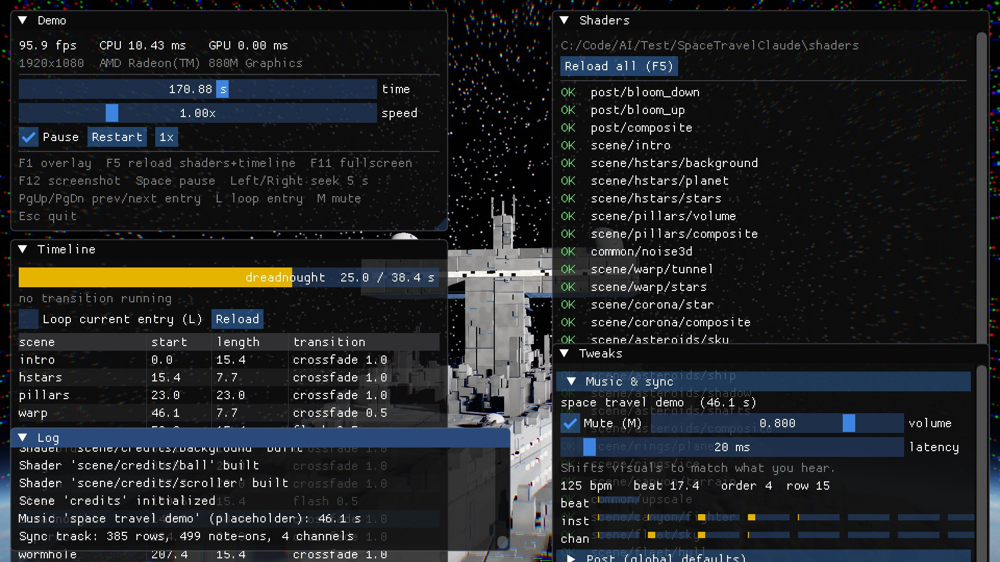
Development builds carry a Dear ImGui overlay on top of the demo. It shows frame timings measured with GPU timer queries, a time slider that scrubs the whole demo, the timeline with the active entry and its transition, every shader program with its compile status, and per-scene sliders. Timeline parameters are supported only where the scene explicitly reads them; their keys can differ from slider labels, and some controls are UI-only. For example, corona supports orbit, scale and snare as timeline keys.
Shaders are read straight from the source tree with a small #include preprocessor. When a file changes on disk the program is rebuilt; if the new version fails to compile the old one keeps running and the error, mapped back to file and line, appears in the overlay. The timeline file reloads the same way, so scene order, lengths and transitions can be edited while the music plays.
SpaceTravel --capture frame.png --time 170.88 renders the frame at that instant and exits — the pure-time rule makes captures repeatable with the same settings. A distribution build disables the overlay and hot reload, retains capture support, and links statically into a single executable.
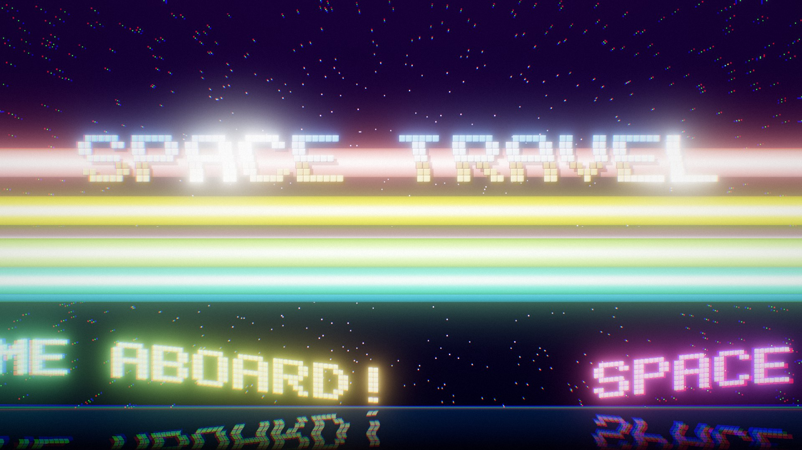
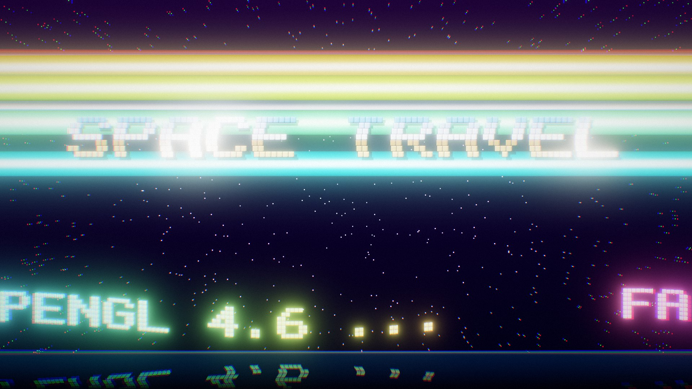
The whole scene is a single fullscreen shader. Text comes from a built-in 8×8 bitmap font, designed as rows of X and . in the source code and uploaded as a tiny texture atlas; the strings live in a second integer texture, one line per row, so the shader can look up any glyph pixel directly.
for each pixel: color = gradient() + twoLayersOfDriftingStars() // copper bars: keep the nearest bar covering this row for i in 0..6: phase = t·speed + i·0.45 center = 0.6 + 0.24·sin(phase); depth = cos(phase) d = |y − center| / thickness if d < 1 and depth > nearest: bar = palette(i) · (0.25 + 1.4·(1 − d²)) · depthShade + specular(1 − d²)¹⁶ ; bar ·= 1 + kickPulse // logo: font pixel → bevelled tile q = (pixel − origin(bounce(t))) / blockSize q.x += sin(row·0.7 + t·2.5) · wobble if fontTexel(text, floor(q)): color = chrome(row) · bevel(fract(q)) + shineBand(q, t) // sine scroller and its reflection column = x/block + t·speed yText = y/block − (2.5·sin(column·0.04 + 2t) + 1.5·sin(…)) if y < waterline: lookup mirrored, x += ripple(y, t), tint blue
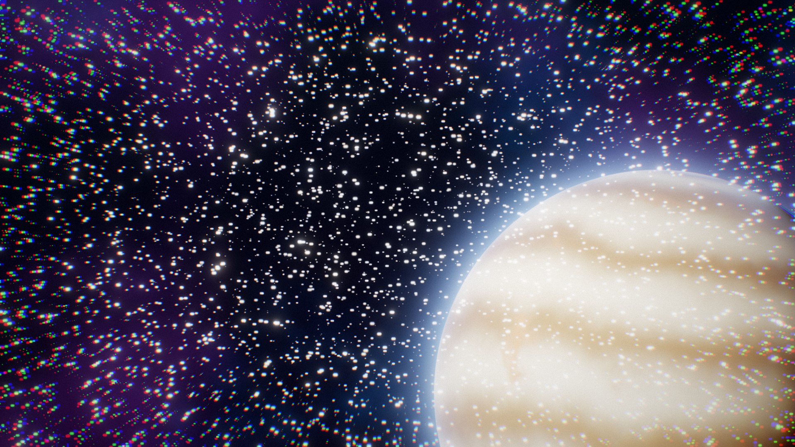
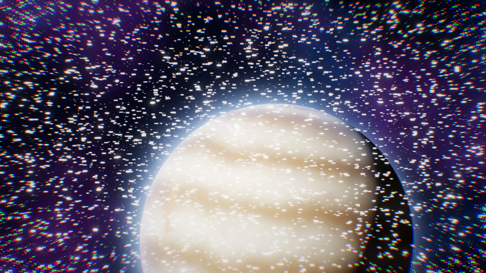
No vertex buffer is involved: one draw call of 6 × stars vertices, and the vertex shader builds each star's quad from its index. Stars are grouped by layer so far and near layers can be drawn in two calls, with the planet in between.
// CPU, once per frame travel = ∫₀ᵗ speed(τ) dτ // speed rises over the last quarter // vertex shader, star k (6 vertices per quad) layer = k / starsPerLayer; depth = (layer + 1) / layers parallax = mix(0.06, 1.0, depth²) x = fract(hash(k) − travel·parallax) · span − span/2 radius = mix(0.7, 2.6, depth) px streak = speed · parallax · width / 60 / 2 px quad = center ± (radius·2 + streak, radius·2) color = tint(hash) · mix(0.25, 3, depth²) · twinkle / (1 + streak·0.3) // fragment: capsule-shaped gaussian d = max(|local.x| − streak, 0)² + local.y² out = color · exp(−1.5 d) // additive blending // planet, fullscreen with premultiplied alpha center = (rightEdge − travel · ½ width, −0.38) // between far and near layers n = sphereNormal(pixel) bands = sin(latitude·14 + fbm(rotate(n, t)·3)·4) color = palette(bands) · (0.015 + 1.5·max(n·L, 0)) · limb + rimGlow
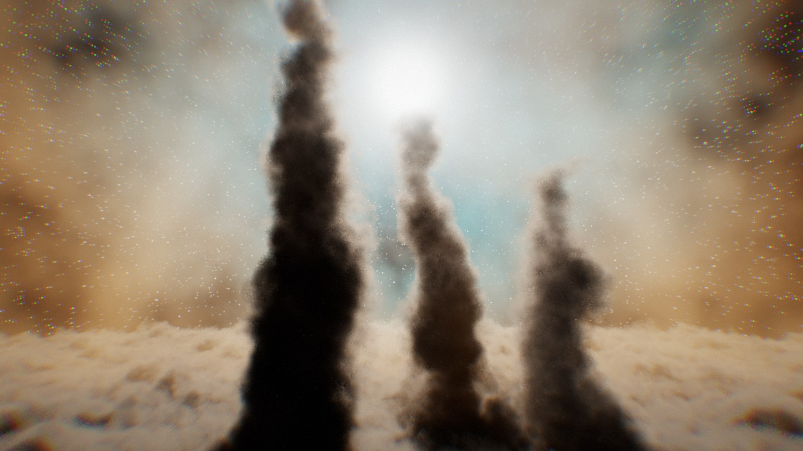
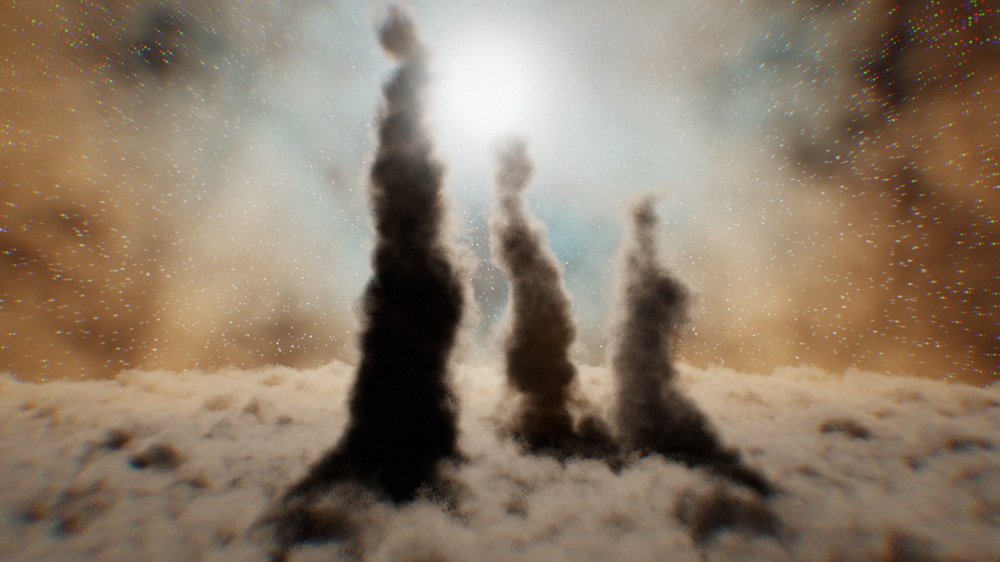
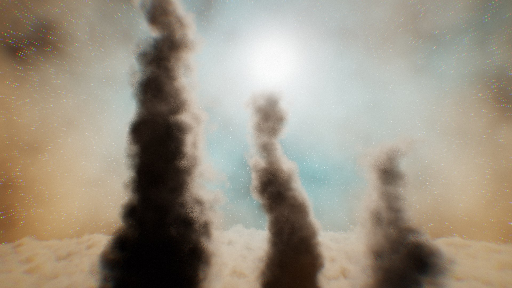
A participating medium marched at half resolution. The pillars are a signed distance — bent, tapering columns with rounded heads — eroded by the noise volume, so their edges break into wisps. Glowing gas fills the space behind them.
for each pixel (½ resolution): T = 1; L = 0; t = jitter(pixel)·Δt repeat N steps: p = ro + rd·t dust = clamp(−0.12 · (pillarSDF(p) + 30·(noise(p·0.011) − ½) − 14·(worley(p·0.029) − ½)), 0, 1) gas = cloud(noise(p·0.003)) // behind the pillars only σ = dust·σ_dust + gas·σ_gas // how much of the cluster light reaches p lit = exp(−Σk=1..6 dust(p + ℓ·k·s) · s · σ_dust) S = light · lit · falloff(|cluster − p|) · HG(rd·ℓ, g) · (dust·albedo + gas·albedo_gas) + gasColor(p) · gas · emission + rim · dust(1 − dust) · lit // ionisation fronts L += T · S · (1 − e^(−σΔt)) / σ T ·= e^(−σΔt); stop if T < 0.02 output (L, 1 − T) composite: (stars + clusterGlow) · T + L
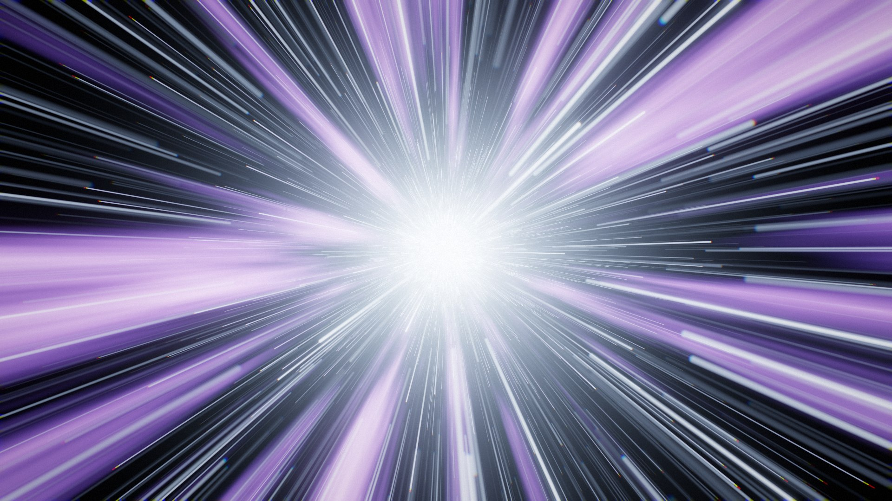
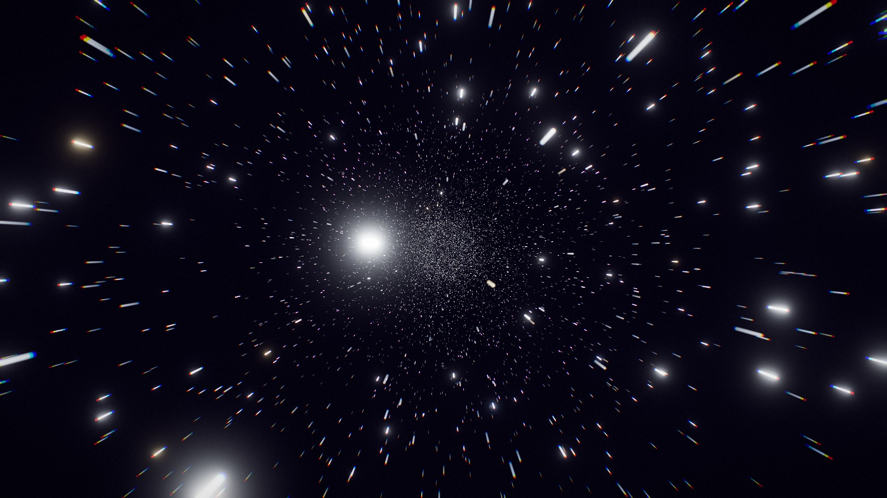
The stars fill a hollow cylinder around the view axis and wrap in depth. Nothing is simulated: a star's position is a pure function of the distance travelled, itself the integral of a speed curve that ramps from cruise to forty times faster.
// CPU speed(t) = cruise + (top − cruise) · smoothstep(0.3, 0.97, t/T)³ travel = ∫ speed, roll = ∫ rollRate, hyper = smoothstep(0.55, 1, t/T) // vertex shader, star k angle, r², z0 = hash(k) xy = rotate(roll) · (cos angle, sin angle) · r z = mod(z0·D − travel, D) + near head = xy / z · focal tail = xy / (z + speed·shutter) · focal quad = from tail − axis·w to head + axis·w, width w = max(0.01/z, 1px) color = tint(hash) → blue(hyper) · (1.2/z) · fadeIn(z) / (1 + 0.12·len/w) // tunnel, fullscreen behind the stars r = |p|, dir = p / r depth = 0.25/r + travel·0.04 n = fbm(vec3(dir·5, depth·0.6)) color = mix(blue, violet, n) · smoothstep(.45, .85, n) · hyper + vanishingGlow(r) · hyper
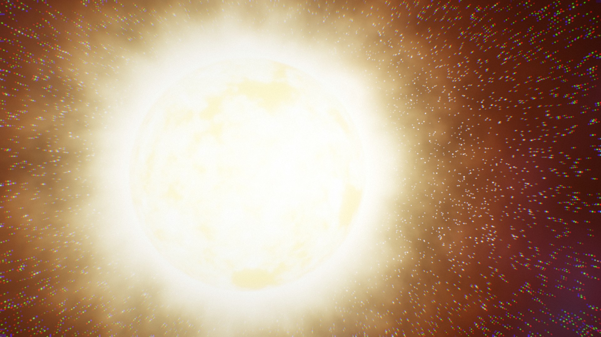
The star is traced at half resolution and composited over a full-resolution celestial sphere of stars (one of the shared building blocks: stars live in 3D cells around the camera and are never clipped at cell borders).
// surface at normal n (star frame) warp = (fbm(p·3 + t·k₁), fbm(p·3 + o₂ − t·k₂), fbm(p·3 + o₃ + t·k₃)) gran = fbm(p·9 + warp·2.2 + t·0.04) heat = (0.75·gran + 0.25·valueNoise(p·30 + warp·4)) · (1 − 0.85·spots(p)) color = ramp(red → orange → white, heat) · (0.3 + 0.7·μ^0.55) // corona: one sample per ray, at its closest approach c = ro + rd·max(−ro·rd, 0); h = |c| − 1 flames = fbm(dir(c)·5 + (h − 0.12t)·0.9)·0.7 + fbm(dir·11 + …)·0.3 glow = exp(−3h / (reach·(0.35 + 1.3·flames))) color += mix(gold, red, h) · (glow·(0.6 + 1.4·flames) + rim(h)) · (1 + snare) // prominences: 48 steps through a bounding sphere for each step p (rotated into the star frame): d = min over 5 arcs of |( |local.xy| − height, local.z )| − thickness(angle) density += (exp(−70d) + 0.08·exp(−12d)) · Δt color += hotPink · density
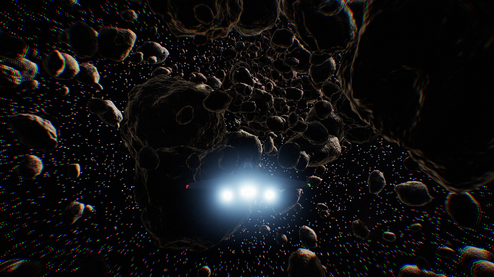
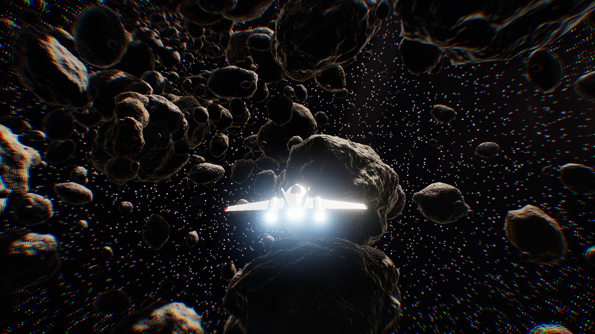
The first scene of the mesh renderer. Eight rock variants are built at start-up — icospheres displaced by noise, with craters carved as bowls and raised rims — in two levels of detail. Thousands of instances share one storage buffer and are drawn with a handful of calls.
// field (rebuilt only when parameters change) every ~70 units along z: heroRock = random(size 6..13) waypoint = rock − lightDir · (rock.size + pass) / |lightDir.xy| path = HermiteSpline(waypoints); push heroes clear of path and camera background rocks: outside corridor(path), uniform over annulus area // each frame (CPU) ship = pose(path, speed·t); bank ∝ lateral acceleration camera = pose(path, speed·(t − lag)) + up·h − forward·b for each rock: cull vs frustum and both cascades; LOD by distance upload all instances to one SSBO; draw per (variant, LOD) with baseInstance // rock.frag height = Σ valueNoise(objectPos·fᵢ)·aᵢ // sticks to the rotating rock N = perturb(normal, dFdx/dFdy(worldPos), dFdx/dFdy(height)) color = albedo · (sun · max(N·L, 0) · PCF₁₂(shadowMap)) + albedo · ambient · cold + rim · max(−V·L, 0) // shafts (½ res): march 48 steps toward the star's screen position sum += isSky(depth(p)) · glow(|p − starUV|) · decayᵏ
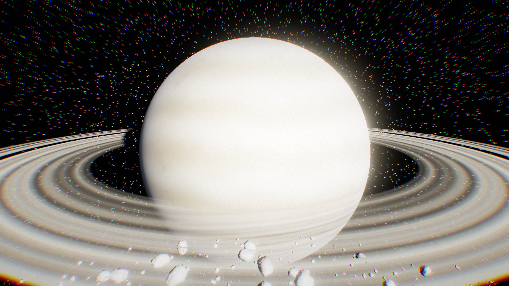
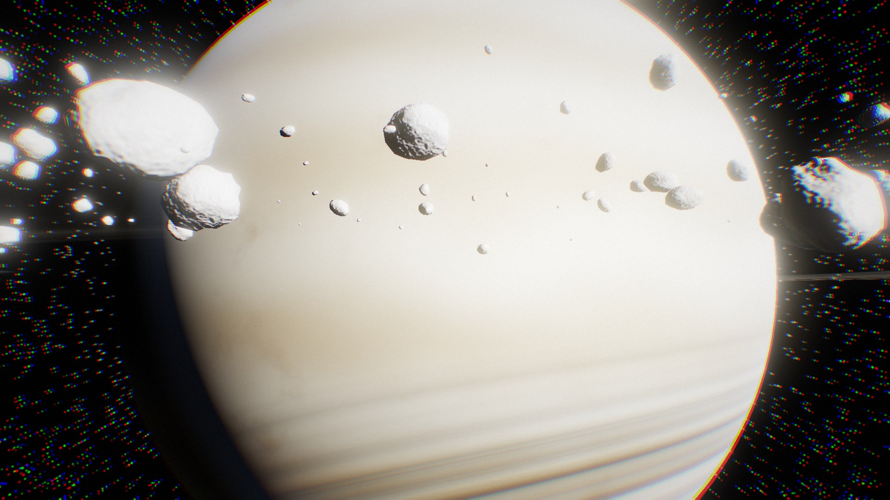
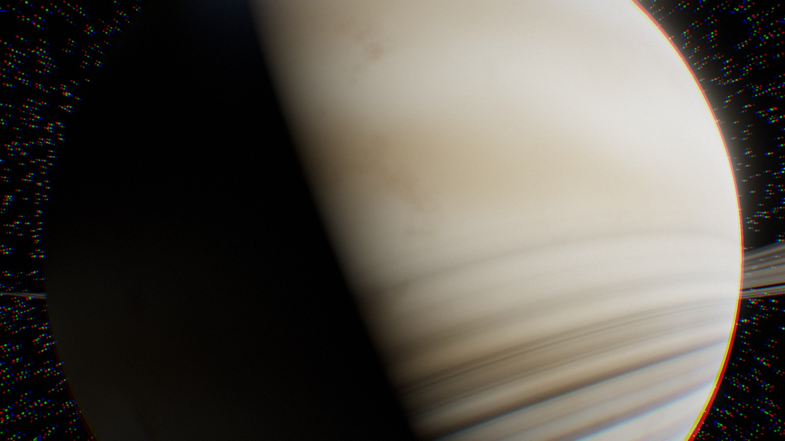
The planet and the ring disc are raytraced analytically in one pass, which also writes depth. Ice chunks near the camera are rasterized afterwards and depth-tested against it. Ring opacity above 0.5 writes depth, an approximation that lets dense parts of the sheet occlude chunks.
for each pixel: tPlanet = raySphere(ro, rd, R); tRing = −ro.y / rd.y if tPlanet hit: p = hit; color = bands(p) · sun · max(n·L, 0) · ringShadow(p) // ringShadow: s = −p.y/L.y; 1 − opacity(|(p + L·s).xz|)·0.9 if tRing > 0 and (planet missed or tRing < tPlanet): r = |hit.xz|; α = opacity(r) · smoothstep(nearFade·0.35, nearFade, tRing) face = sameSideAsSun ? albedo·sun·(0.25 + 0.75|L.y|) : albedo·sun·(1 − α)·forwardScatter(rd·L) color = mix(color, face · planetShadow(hit), α) depth = planet hit ? projectedDepth(tPlanet) : 1 if ring is in front and α > 0.5: depth = projectedDepth(tRing) gl_FragDepth = depth // CPU, each frame near the ring plane for each cell (2.5 units) within 70 of the camera: p = cellCenter + jitter(hash); y = (hash − ½)·2.4 if hash < opacity(|p.xz|)·1.1 and clear of camera path: addInstance(p, size(hash), spin(hash, t))
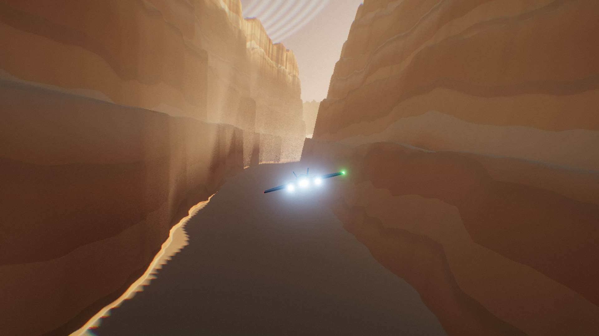
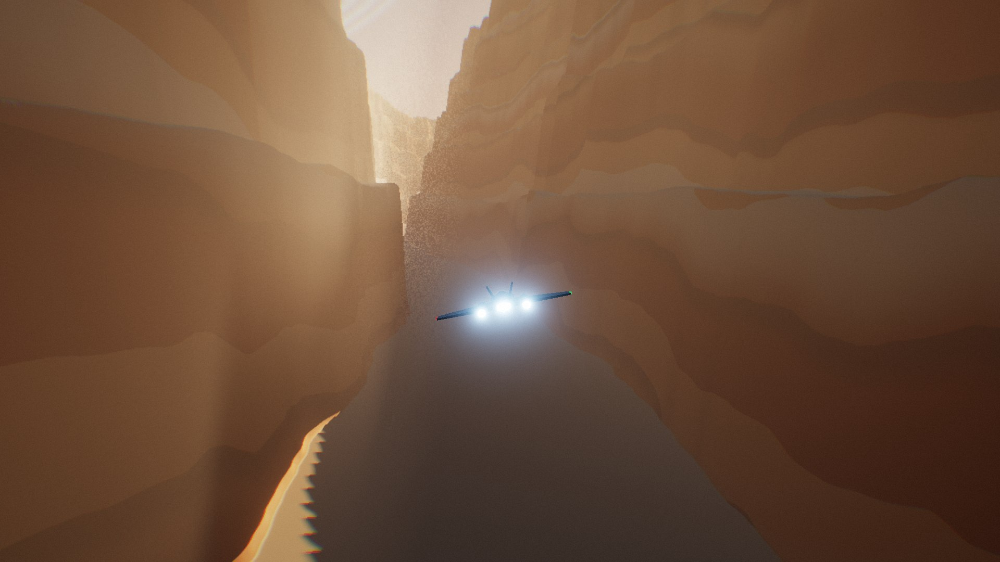
The terrain is a function h(x, z) marched per pixel at reduced resolution, writing depth. The result is upscaled together with its depth, and the fighter mesh is then drawn at full resolution and depth-tested against it — crisp ship, affordable terrain.
h(x, z): mesa = 70 + noise(x,z)·40 + noise(…)·12 d = |x − center(z)| + erosion(x,z) s = clamp((d − 0.35·w(z)) / (0.9·w(z)), 0, 1) return mix(floorNoise, mesa, terrace(s)) // (⌊5s⌋ + smoothstep(.55,1,fract 5s))/5 // march: conservative steps for steep cliffs, then bisection repeat: Δ = p.y − h(p.xz); if Δ < 0.002t break; t += max(0.3Δ, ε(t)) 5 × bisect(previous t, t) n = normalFromCentralDifferences(h) sun = max(n·L, 0) · softShadow(p, L) · shipShadow(p) // softShadow: march toward L, visibility = min(10·Δ/t) color = strata(p.y, n) · (sun·sunColor + sky·(0.5 + 0.5 n.y)·depthAO + bounce) color = mix(color, haze, 1 − e^(−0.0015 t)) // dust: 16 jittered steps, density = e^(−y/12) · noise3D(p + wind) lit = Π clamp((q.y − h(q.xz))·0.2) for q = p + L·{12, 40} L += T · (sun·lit·HG + sky) · density · Δt
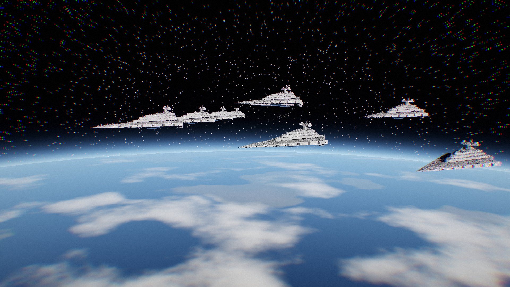
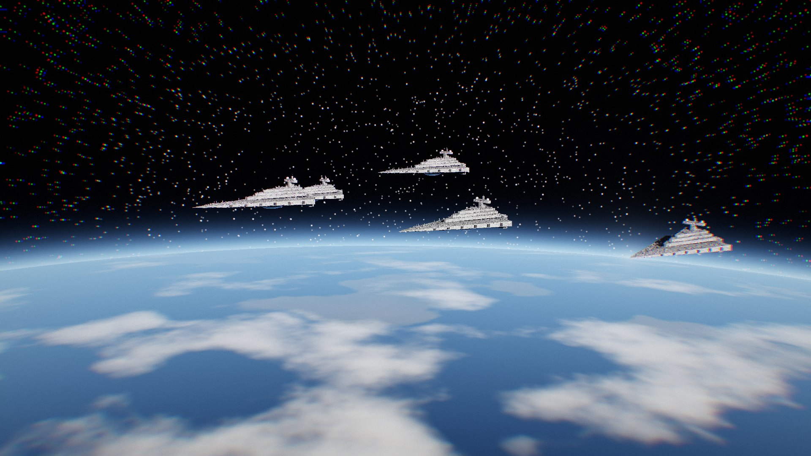
An almost pure reuse scene: the dreadnought's procedural mesh, hull shader and planet sky, twelve instances and two shadow cascades. What makes it is timing: each arrival is scheduled on a beat of the music.
beat = 60 / bpm for ship i in 0..11: s = t − (firstBeat + i·everyBeats)·beat if s < 0: continue // not yet arrived position = slot[i] + drift(t) − (0, 0, 2000·e^(−7s)) stretchZ = 1 + 25·e^(−10s) instances += translate(position) · scale(1, 1, stretchZ) streak[i] = (project(tail), project(head)), intensity e^(−6s) flash[i] = project(head), intensity e^(−4s) shadowPasses(instances); sky(planet); hulls(instances) // flashes.frag, added on top for i: color += blue · streak[i].intensity · glow(distToSegment(pixel)) color += white · flash[i].intensity · (radialGlow + horizontalFlare)
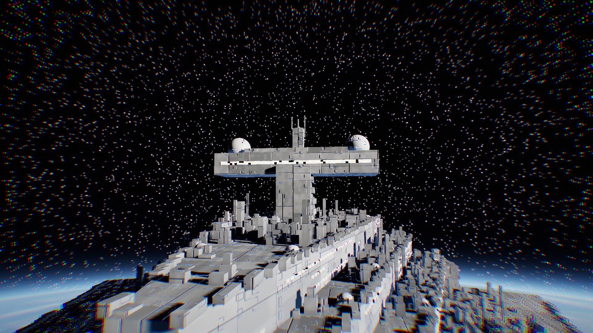
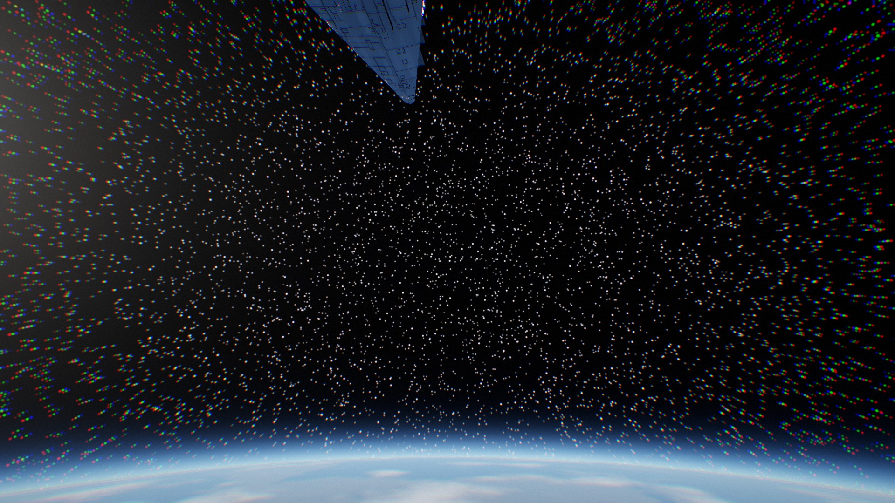
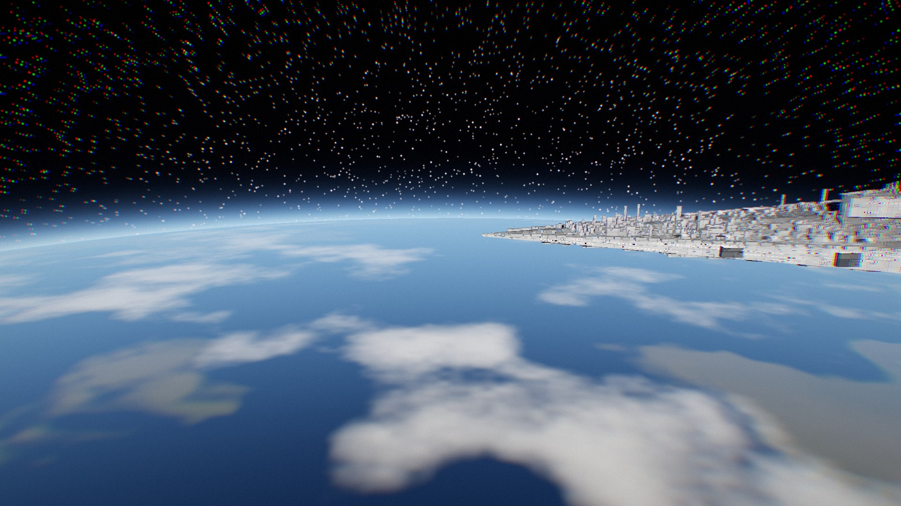
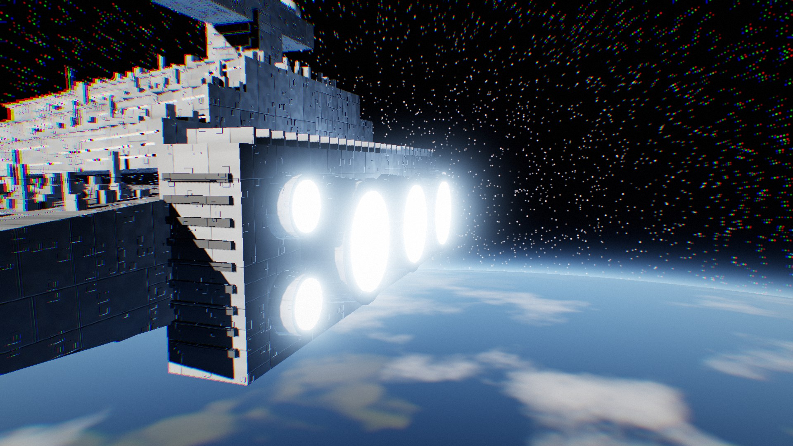
An original wedge-shaped capital ship, built entirely by code. Large forms come from lofts — polygon cross-sections joined along z. Detail comes from layers of rules that read the shape's own height functions.
// big forms hull = loft(hexagon, rings z = −100 … 100, width/height profile) tiers = 3 × loft(rect, following ridge(z) + lift·k) + tower, domes, reactor bulb, engine block with 7 nozzles // city on the decks for each cell (1.4 units) on the top surface: district = fbm(x·0.045, z·0.045) if rand > 0.12 + 0.75·smoothstep(.4, .62, district): continue footprint = cell · rand(0.45..0.95) // long rows in dense districts if max(cornerHeights) − min(cornerHeights) > 0.5: continue height = 0.25 + 1.6·rand^2.2 · (0.6 + district) // 3%: tower addBox(base = min(corners), occlusion(bottom) = 0.4) maybe stack a smaller box + rims, turrets, lit windows in noise runs, underside plates, docking bay // hull.frag plate = regionVariedRectangles(planarUV(p, n)) // id, distance to seam N = perturb(n, seams·0.04 + raisedBlocks(uv)) color = albedo(plate, grime) · (sun·N·L·PCF + planetBounce + ambient)·AO + env(reflect) · fresnel + engineGlow / distance²
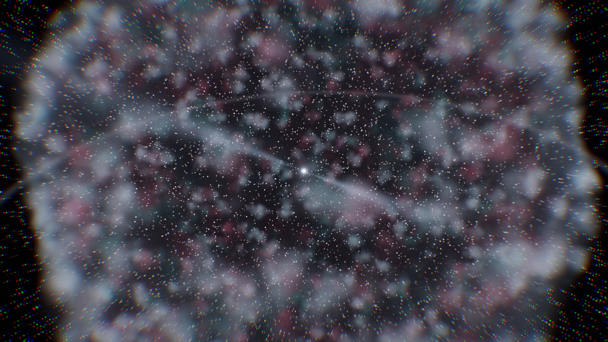
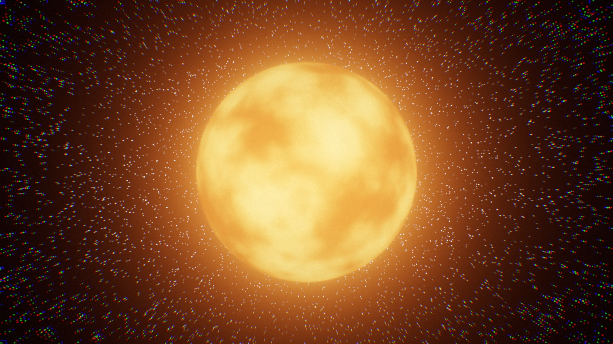
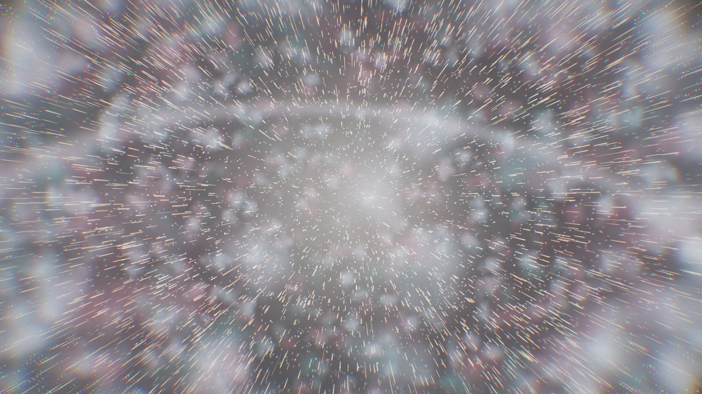
A three-act scene timed to the music: the giant grows unstable, collapses in the last second, and the flash lands exactly on beat 16. The shell is then raymarched at half resolution.
flash at t₀ = duration/3; s = t − t₀ starRadius = 22 · pulse(t) · (1 − smoothstep(t₀ − 1.2, t₀, t)) R(s) = s > 0 ? 150·(1 − e^(−0.25s)) + 1.5s : 0 flashLight = s ≥ 0 ? 12·e^(−2.5s) : 0 shake = s > 0 ? 2.5·e^(−2s) : 0 // when R > 0: march inside the sphere 1.35R + 5 for each step p: front = R · (1 + 0.2·(noise(dir(p)·0.9) − ½)) x = (|p| − front) / (0.22R + 1) // 0 at the front profile = smoothstep(0.15, 0, x) · smoothstep(−1.4, −0.2, x) q = p / max(R, 1) // early-size guard density = profile · (0.06 + 1.6·smoothstep(.55, .85, worley(q·1.6))) heat = smoothstep(−0.5, 0.1, x) emission = mix(mix(pink, teal, noise(q)), blueWhite·3, heat) · density + ringGlow(p) + pulsarBeam(p, angle(t)) L += T · emission · Δt; T ·= e^(−density·Δt·k) // debris shard k: rides at R(s)·speed_k, streak from R(s − 0.12) to R(s)
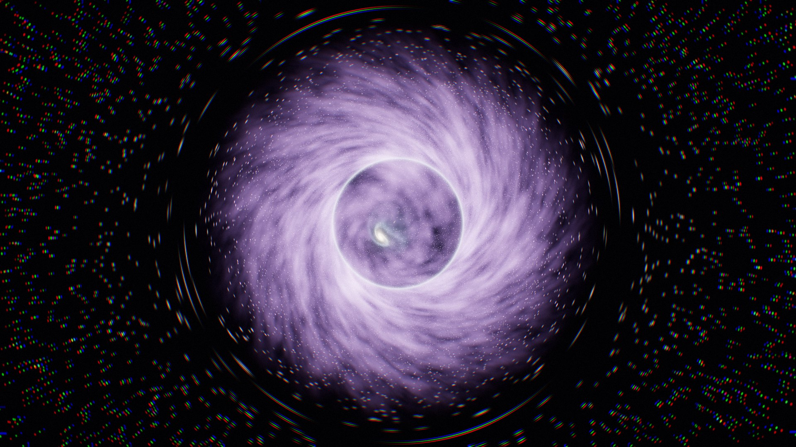
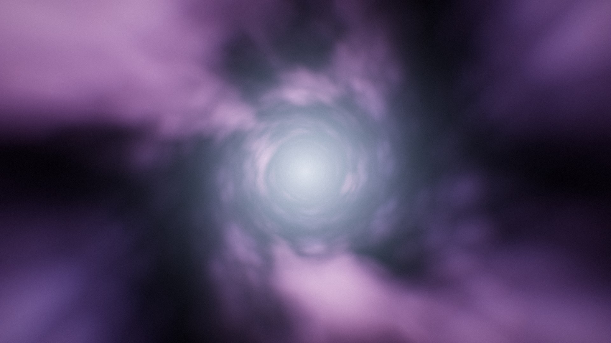
A fully analytic lens, cheap enough for full resolution. Each ray is classified by its impact parameter b, its closest distance to the mouth's center.
tc = −ro·rd; c = ro + rd·tc; b = |c|; out = c / b if tc > 0 and b < R: θ = π · (b/R)² // straight through at the center color = otherSky(rd·cos θ − out·sin θ) · (1 + 1.5·(b/R)¹²) else: bend = 1.2 · R / max(b, R) color = ourSky(rd·cos bend − out·sin bend) color += photonRing · exp(−|b − R| / 0.015R) otherSky(d): q = gnomonic(d, galaxyAxis)·3; r = |q|; φ = atan(q) arms = (½ + ½cos(2(φ − 2.6·ln r)))³ color = stars + exp(−2.2r)·(0.35 + 0.65·arms)·grain + core(r) + pinkKnots // gas: 40 steps in the shell [R, 3R] q = rotate(p.xy, 0.4t + 3R/|p|); density = shell(|p|)·cloud(noise3D(q)) // tunnel: depth = 0.35/r + travel; noise(vec3(angle/2π + …, depth, k))
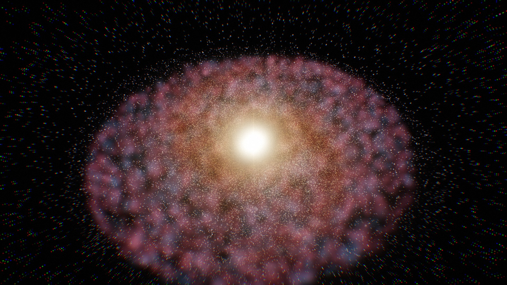
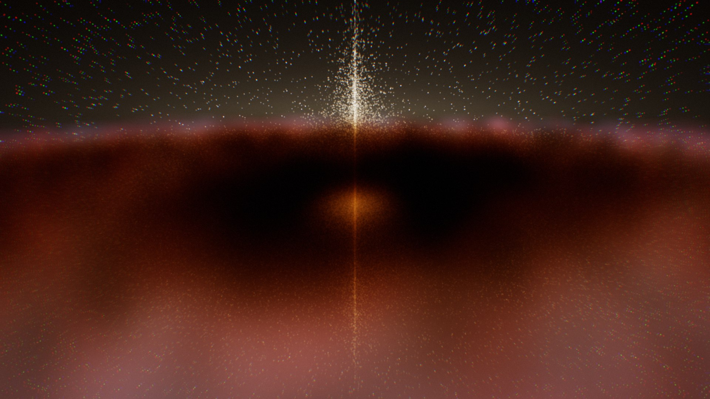
Spiral arms without simulating gravity. Every star moves on an ellipse whose orientation twists with its size; where neighbouring ellipses crowd together, two arms appear — a density wave. Stars stream through the arms while the pattern itself turns slowly.
// vertex shader, star id bulge = hashU(id, 1) < 0.18 a = bulge ? 14·u^1.6 : −28·ln(1 − u·(1 − e^(−110/28))) // truncated exponential semi-major axes, not surface density k(a) = axis ratio: 0.6 in the core → 0.82 → 0.95 at the rim φ = phase(id) + v/(a + 3) · t // flat rotation curve e = (a·cos φ, a·k(a)·sin φ) θ = a·twist + pattern(t) // the twist makes the arms pos = (rotate(θ)·e).x, gaussian·thickness(a), (rotate(θ)·e).y size = clamp(scale / |pos − cam|, 1, 6) color = temperature(id, bulge) · luminosity(id) · brightness / size // gas: quads on the same orbits, added (pink / blue) // dust: thinner layer, phase − 0.12 (trailing), blend ZERO, ONE_MINUS_SRC_COLOR // background: haze at the ray / plane crossing + core glow r_plane = |(ro + rd·(−ro.y/rd.y)).xz|; haze = e^(−r/30) core = closestApproach in squashed frame (y·2.5) → e^(−r/5) + e^(−r/16)
Every camera ray is integrated as a light path around a Schwarzschild black hole using the classic approximation a = −1.5 h² x / r⁵, where h is the ray's angular momentum. No special cases are written for the effects: they emerge from the integration.
pos = camera; dir = rd; h² = |pos × dir|² color = 0; α = 0; captured = false repeat up to N steps: r = |pos| if r < 1: captured = true; break // retain gathered light if escaping: break dt = clamp(0.12·(r − 1), 0.012, 1.5) dir += −1.5 · h² · pos / r⁵ · lensing · dt prev = pos; pos += dir · dt if sign(prev.y) ≠ sign(pos.y): // crossed the disk plane p = lerp to y = 0; r = |p.xz| if inner < r < outer: T = (r₀/r)^¾ · (1 − √(r₀/r))^¼ / 0.488 φ = atan(p.z, p.x) − r^(−1.5)·speed·t // Keplerian turb = fbm(cos/sin(φ + 2.5 ln r)·2, r·2.5) β = √(0.5/(r − 1)); δ = 1/(γ(1 − β·toObserver)) g = √(1 − 1/r); shift = mix(1, δ·g, doppler) c = blackbody(T·shift·temp) · T² · shift³ · (0.4 + 1.6·turb + spots) color += (1 − α)·c·a; α += (1 − α)·a // front to back jets(pos) // optional polar glow if not captured and α < 0.99: color += (1 − α) · lensedBackground(normalize(dir))
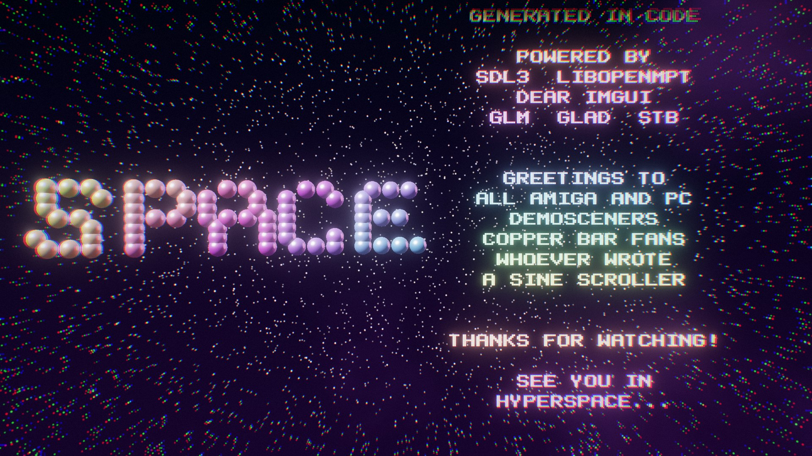
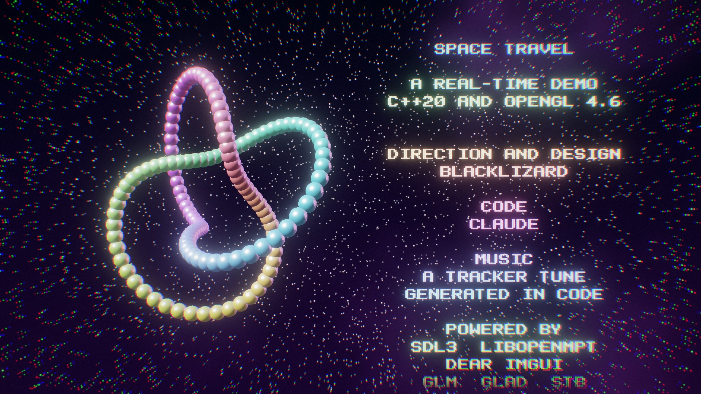
The demoscene's traditional closer. 128 glossy spheres — one instanced draw — morph every eight beats between shapes computed at start-up. The word SPACE is not modelled: its ball positions are the set pixels of the same 8×8 font used everywhere else, read back on the CPU.
shapes = [ fibonacciSphere, lattice 5³, torusKnot(2,3),
doubleHelix, fontPixels("SPACE"), spiral ]
beat = t · bpm / 60
current = ⌊beat / 8⌋ mod 6; into = beat mod 8
yaw = mix(0.6t, 0.25·sin(0.5t) + 2π·turns, facing)
// turns: fixed when the morph starts
for ball i in 0..127:
m = smoothstep(i·0.006, 2 + i·0.006, into) // ripple
p = mix(shapes[previous][i], shapes[current][i], m)
pos = center + rotate(yaw, pitch) · p · 1.3
radius = 0.09 · p.visible · (1 + 0.3·beatPulse)
tint = cosinePalette(i/128 + 0.05t)
// scroller.frag
line = ⌊(fromTop − screenH + scroll) / lineHeight⌋
cell = (x − columnLeft(line)) / pixelSize
if fontTexel(textTexture[line], cell):
color = palette(line + t) · bevel; alpha = fade(y)
Float hashes ("hash without sine") drive most per-pixel effects; integer PCG hashes take over when ids reach the millions. Value noise interpolates hashed lattice corners with a smooth curve; fbm sums octaves at doubling frequency and halving amplitude. Worley (cellular) noise measures the distance to the nearest random feature point — inverted, it makes billows and filaments.
Volumetric scenes need hundreds of noise lookups per pixel. A compute shader bakes a 128³ RG8 texture once: every octave uses a period that divides the volume, hashing coordinates modulo the period, so the texture tiles seamlessly in all three directions and hardware trilinear filtering does the rest.
The pillars integrate emission and in-scattered light S analytically within each step, assuming constant extinction σ and source S. This removes the plain sum's brightness bias for a uniform medium; varying density, lighting and shadows still introduce step-count-dependent sampling error.
Canyon dust, supernova gas and wormhole gas instead use a simpler T · source · Δt sum, followed by exponential attenuation. These four passes jitter the start per pixel to turn banding into fine grain.
L += T · S · (1 − e^(−σΔt)) / σ
T ·= e^(−σΔt)
HG(cosθ, g) = (1 − g²) / (1 + g² − 2g·cosθ)^1.5 // isotropic = 1
Directional lights use cascaded shadow maps: each cascade is an orthographic box around a sphere, extended toward the light to catch distant occluders, and snapped to whole texels so shadows don't shimmer as the camera moves. Lookups offset the position along the normal and average 12 Poisson taps rotated per pixel.
Procedural meshes have no UVs. Surface detail perturbs the normal using screen-space derivatives of the world position and of a height field (Mikkelsen's method), so any noise can become relief.
Scenes output linear HDR. Bloom thresholds softly, downsamples with a 13-tap filter (with a Karis average on the first pass against flickering highlights) and upsamples with a tent filter into a 6-level chain. Chromatic aberration grows toward the corners; ACES compresses highlights; grain dithers away banding.
shadow(p) = mean over 12 taps of
compare(cascadeMatrix · (p + n·1.5 texel), rotate(φ_pixel)·poisson_k)
N' = normalize(|det|·N − strength · sign(det)·(dh/dx·r₁ + dh/dy·r₂))
The placeholder soundtrack is a four-channel ProTracker module assembled byte by byte in memory: a kick from a pitch-swept sine, a snare and hats from filtered noise, a single-cycle saw bass and a pulse lead playing arpeggios. libopenmpt plays it with Amiga-style resampling.
Instead of reacting to audio events, the demo scans the module once at load time — rendering it silently at 8 kHz and noting every row change and note-on with a 2 ms resolution. Scenes query the resulting table by time, which keeps sync exact while scrubbing, pausing or looping.
scan(module):
while render(16 frames at 8 kHz) > 0:
if (order, row) changed:
rows += (time, order, row)
for channel: if noteOn: hits[channel] += time,
hits[instrument] += time
sinceInstrument(i, t) = t − last(hits[i] ≤ t)
pulse = e^(−since · decay)
Meshes are assembled from a few generators: subdivided icospheres (rocks, domes, balls), lofts of polygon cross-sections (hulls, wings, nozzles, boxes), and appended copies with transforms that flip winding when mirrored. Faces are oriented outward automatically, and flat shading duplicates vertices per face for crisp hard-surface edges.
A transition is any shader in shaders/transitions/ that receives the outgoing and incoming frames and a progress value: crossfade, an HDR white flash peaking on the cut, a slanted wipe with a glowing edge, a pixel dissolve, a digital glitch. Adding one is adding a file.
Everything in this book obeys the same contract: an image is a function of time. It is what lets a five-minute demo be edited live, scrubbed like a video, and photographed beat by beat for these pages.
Direction and design: blacklizard
Code: Claude
C++20, OpenGL 4.6 core, GLSL. SDL3 for windowing, input and audio; libopenmpt for the tracker music; Dear ImGui for the development overlay; glm, glad and stb. Built with CMake and vcpkg; the distribution build is a single statically linked executable with its shaders and timeline beside it.
Designed for, and captured on, a laptop with an AMD Radeon 880M integrated GPU. Every image is a frame of the running program at 1920×1080, captured with --capture at a chosen beat.
A companion set of interactive pages, docs/explainer/, runs each scene's real shaders in the browser, with sliders, for readers who want to see the ideas of this book at work.
Greetings to all Amiga and PC demosceners, past and present.
See you in hyperspace.